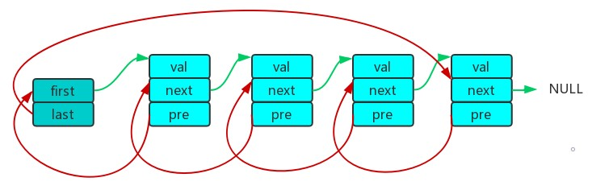
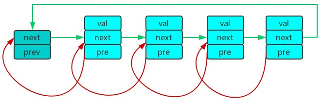
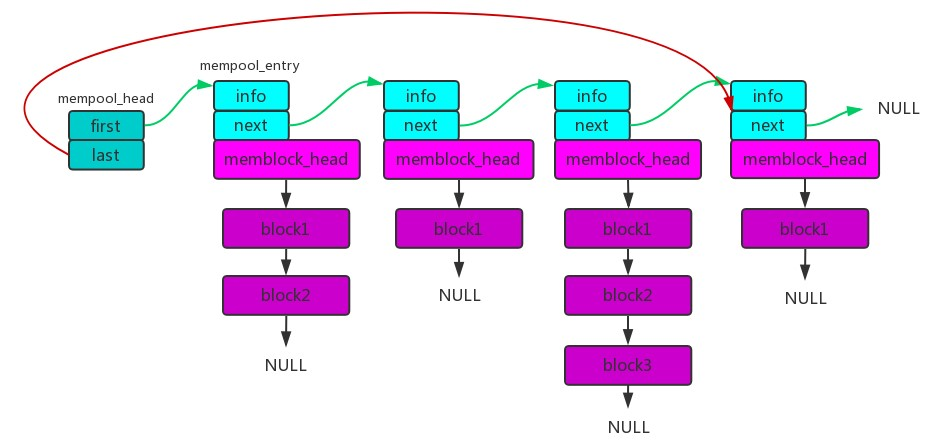
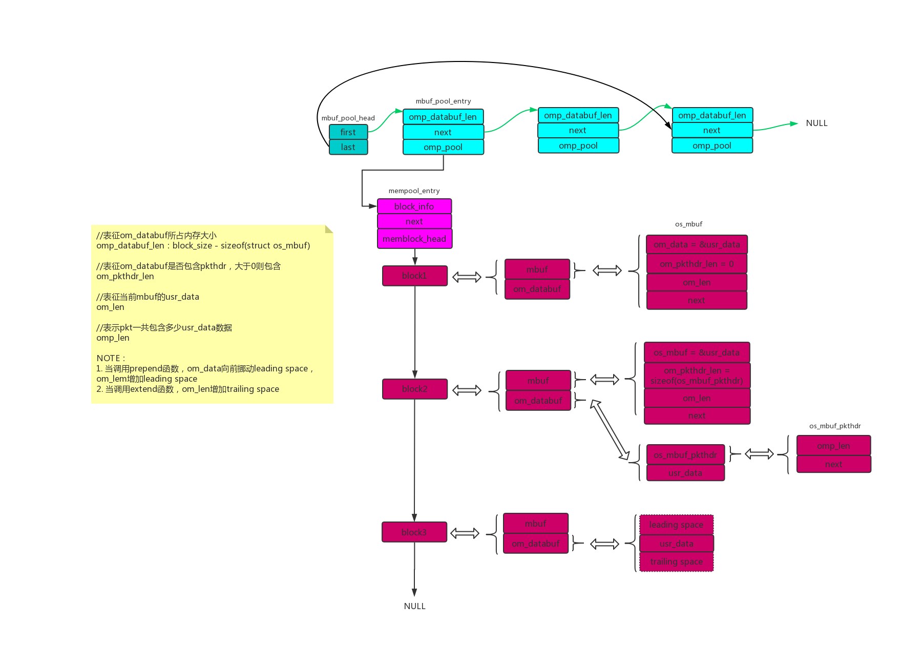

内存策略是每个协议栈的基石之一，所谓百尺高楼平地起，看看nimble的钢筋混凝土有没黑科技。
前言
理解不对的地方欢迎斧正。
nimble的内存管理主要由以下文件组合实现:queue.h、os_mempool.c、os_mempool.h、os_mbuf.c、os_mbuf.h、mem.c、mem.h。
目录
1. queue.h
91年的伯克利队列，产自FreeBSD，上等轮子，收藏学习之。
头文件包含5种队列的实现，而nimble用到三种，分别是TAILQ、SLIST、STAILQ。
因为涉及经典的双向链表实现，所以有去翻资料专门学习，分享一下双向链表学习心得。
1.1. 双向链表
形如下图，元素之间可以双向追溯的链状结构，可称双向链表。
C编程常会自定义结构体，当希望将结构体串成如上图样式时，传统做法是把结构体嵌入链表元素中，下面介绍的是另外一种方式，将链表元素嵌入自定义结构体中，这时自定义结构体称为“宿主结构体”。
1.2. 双向链表的需求
- 可将链表元素放进任意宿主结构体中
- 方便用户访问宿主结构体中的成员
- 支持链表基本操作（获取第一个链表元素、获取最后一个链表元素、插入元素、移除元素等）
1.3. 双向链表的实现
分享两种应用得比较广泛的双向链表实现，源码分析请到参考资料章节，这里简单归纳总结。
1.3.1. FreeBSD的TAILQ

- 访问宿主结构体方式：指针间接访问，无须计算过程
- 二级指针：
- 因为next是宿主结构体的一级指针，而prev指向next，所以prev就是宿主结构的二级指针。
- 若prev为宿主结构体的一级指针，则在删除/添加element的时候，需要判断是否为第一个element，如果是则要将element的prev设置为NULL。
1.3.2. linux的LIST

- 访问宿主结构体方式：每次访问都需计算container_of
- 一级指针：代码清晰易懂
2. os_mempool.c & os_mempool.h

依赖关系：
- 用
queue.h中的宏定义串链表
主要实现概念：
- 一个mempool_head下挂着一条mempool链表
- 每个mempool的memblock_head下挂着一条memblock链表
- 每个mempool的info表明memblock链表的信息（block个数、block大小等）
主要实现功能：
- os_mempool_init：往mempool链表插入一个新的mempool
- os_memblock_get：从mempool中获得一个block
- os_memblock_put：将block放回mempool中
3. os_mbuf.c & os_mbuf.h

依赖关系：
- 用
queue.h中的宏定义串链接 - 用
mempool.h中的mempoo对象
主要实现概念：
- 一个mbuf_pool_head下挂着一条mbuf_pool链表
- 每个mbuf_pool包含一个mempool
- 将memblock强制转化成mbuf+databuf
主要实现功能：
- os_mbuf_get：获得一个mbuf（databuf不包含pkthdr）
- os_mbuf_get_pkthdr：获得一个mbuf（databuf包含pkthdr）
- os_mbuf_free：释放一个mbuf
- os_mbuf_append：往mbuf的databuf中添加用户数据，如果当前mbuf不够用，则申请一个新的mbuf添加，直到申请失败或者数据添加完成。
- os_mbuf_off：自指定mbuf的databuf中获得指定offset的地址，如果当前mbuf的databuf没有足够offset，则继续从next mbuf获得，直到next_mbuf = NULL为止。
- os_mbuf_adj：裁剪mbuf的databuf，比如当前databuf有10个字节数据，需要从头裁剪12个数据，则会将当前databuf长度等于0，并且将下一个mbuf的databuf长度减2。
- os_mbuf_prepend：向前扩展指定大小的databuf内存空间，返回扩展后地址，如果leading space不够，则申请一个新的mbuf，将当前mbuf挂在新的mbuf后面。
- os_mbuf_extend：向后扩展指定大小的databuf内存空间，返回扩展后地址，如果trailing space不够，则申请一个新的mbuf，挂在mbuf当前mbuf后面。
- os_mbuf_pullup：从mbuf中获取能提供指定大小连续有效用户数据的mbuf。
- 如果当前mbuf足够多有效用户数据，则返回当前mbuf
- 如果当前mbuf无足够有效用户数据，但存在下一个mbuf，则将下一个mbuf有效用户数据拷贝到当前mbuf有效用户数据后面，然后返回当前mbuf。
- 如果当前mbuf无足够有效用户数据，也不存在下一个mbuf，则申请一个mbuf，将当前mbuf的用户数据拷贝到申请到的mbuf，然后返回申请的mbuf。
- os_mbuf_trim_front：将指定mbuf链表的前面所有空mbuf移除掉。
4. mem.c & mem.h
主要实现功能：
- mem_malloc_mempool_gen：调用malloc获得内存，用于构造上述章节的数据结构。
- mem_split_frag：从mbuf中fragment出一包数据。
5. 总结
- queue：提供链表实现，用于构造内存池
- mempool：提供基础内存池的API，从内存池中获取/释放内存块
- mbuf：提供负责内存块的API，根据实际要求修改内存块（增加帧头帧尾、添加数据等）
- mem：提供nimble中最高抽象的内存初始化